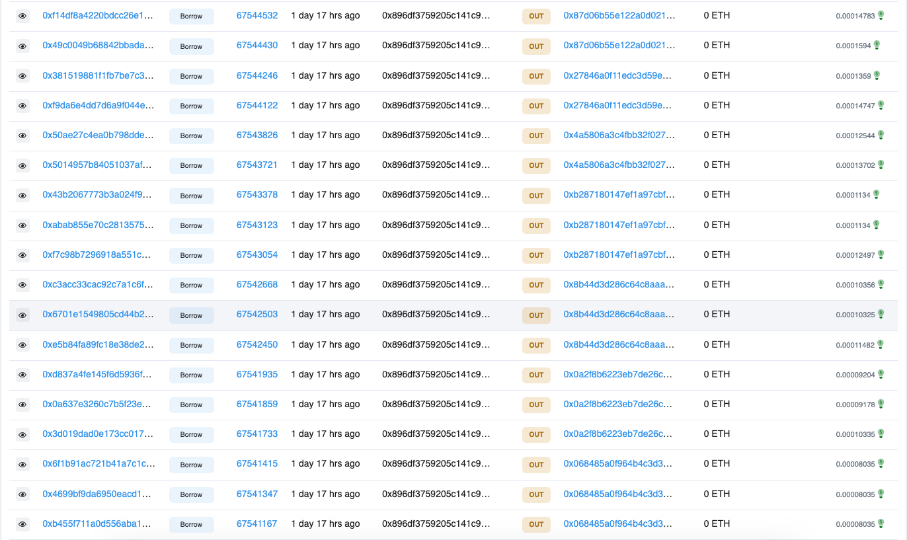
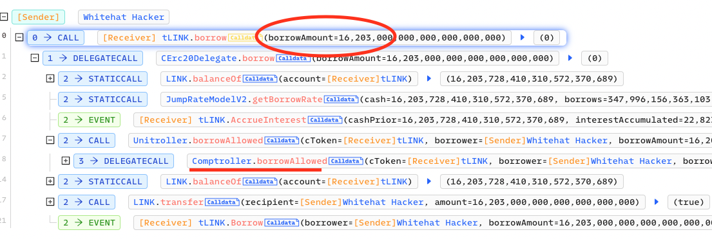

<!DOCTYPE html>
<html lang="en-us">
  <head>
  <meta charset="utf-8" />
  <meta
    name="viewport"
    content="width=device-width, initial-scale=1, shrink-to-fit=no"
  />
  <title>
    
      Tenderfi post-mortem -
      
      LowK
  </title><meta name="author" content="LowK" />
  
    <meta name="robots" content="index,follow" />
  
  <meta name="generator" content="Hugo 0.111.2">

  <meta property="og:title" content="Tenderfi post-mortem" />
<meta property="og:description" content="Tenderfi is a project that is built on top of the Uniswap protocol. It is a decentralized lending protocol that allows users to borrow and lend assets on the Ethereum blockchain. The protocol is built on top of the Uniswap protocol and uses the Uniswap AMM to provide liquidity for the lending pool. The protocol is built on top of the Uniswap protocol and uses the Uniswap AMM to provide liquidity for the lending pool." />
<meta property="og:type" content="article" />
<meta property="og:url" content="https://lowk.me/reports/20230308-tenderfi/" /><meta property="article:section" content="reports" />
<meta property="article:published_time" content="2023-03-08T16:27:04+07:00" />
<meta property="article:modified_time" content="2023-03-08T16:27:04+07:00" />

  <meta name="twitter:card" content="summary"/>
<meta name="twitter:title" content="Tenderfi post-mortem"/>
<meta name="twitter:description" content="Tenderfi is a project that is built on top of the Uniswap protocol. It is a decentralized lending protocol that allows users to borrow and lend assets on the Ethereum blockchain. The protocol is built on top of the Uniswap protocol and uses the Uniswap AMM to provide liquidity for the lending pool. The protocol is built on top of the Uniswap protocol and uses the Uniswap AMM to provide liquidity for the lending pool."/>

  

  

  
  <script type="application/ld+json">
{
    "@context": "http://schema.org",
    "@type": "BlogPosting",
    "articleSection": "reports",
    "name": "Tenderfi post-mortem",
    "headline": "Tenderfi post-mortem",
    "alternativeHeadline": "",
    "description": "Tenderfi is a project that is built on top of the Uniswap protocol. It is a decentralized lending protocol that allows users to borrow and lend assets on the Ethereum blockchain. The protocol is built on top of the Uniswap protocol and uses the Uniswap AMM to provide liquidity for the lending pool. The protocol is built on top of the Uniswap protocol and uses the Uniswap AMM to provide liquidity for the lending pool.",
    "inLanguage": "en-us",
    "isFamilyFriendly": "true",
    "mainEntityOfPage": {
        "@type": "WebPage",
        "@id": "https:\/\/lowk.me\/reports\/20230308-tenderfi\/"
    },
    "author" : {
        "@type": "Person",
        "name": "LowK"
    },
    "creator" : {
        "@type": "Person",
        "name": "LowK"
    },
    "accountablePerson" : {
        "@type": "Person",
        "name": "LowK"
    },
    "copyrightHolder" : "LowK",
    "copyrightYear" : "2023",
    "dateCreated": "2023-03-08T16:27:04.00Z",
    "datePublished": "2023-03-08T16:27:04.00Z",
    "dateModified": "2023-03-08T16:27:04.00Z",
    "publisher":{
        "@type":"Organization",
        "name": "LowK",
        "url": "https://lowk.me",
        
        }
    },
    "image": "https://lowk.me/reports/20230308-tenderfi/img/cover.png",
    "url" : "https:\/\/lowk.me\/reports\/20230308-tenderfi\/",
    "wordCount" : "1083",
    "genre" : [ ],
    "keywords" : [ ]
}
</script>


  <link
    rel="preload"
    href="/fonts/Comfortaa-Light.ttf"
    as="font"
    type="font/ttf"
    crossorigin
  />
  <link
    rel="preload"
    href="/fonts/FiraSans-Regular.ttf"
    as="font"
    type="font/ttf"
    crossorigin
  />
  <link
    rel="preload"
    href="/fonts/Comfortaa-Bold.ttf"
    as="font"
    type="font/ttf"
    crossorigin
  />
  
  
  <link rel="canonical" href="https://lowk.me/reports/20230308-tenderfi/" />

  
  
  <link
      rel="stylesheet"
      href="https://lowk.me/css/build.min.18d031cfd031d459edeabddebe324cdc79d8d4b70686bb2bde15fa5802d67894.css"
      integrity="sha256-GNAxz9Ax1Fnt6r3evjJM3HnY1LcGhrsr3hX6WALWeJQ="
      crossorigin="anonymous"
    />
  

</head>

  <body class="flex flex-col min-h-screen dark:bg-gray-900">
<header
  class="w-full bg-gray-200 dark:bg-black border-t-2 border-accent-400 sticky top-0 transition-shadow duration-300 hover:shadow-lg z-10"
>
  
  <style type="text/css">
    input#nav-toggle:checked ~ label#show-button {
      display: none;
    }

    input#nav-toggle:checked ~ label#hide-button {
      display: flex;
    }

    input#nav-toggle:checked ~ #nav-menu {
      display: block;
    }
  </style>

  <nav
    class="flex items-center sm:justify-around justify-between flex-wrap py-2 px-2"
  >
    <a
      href="https://lowk.me/"
      class="flex items-center text-gray-700 dark:text-gray-200 font-mono font-bold"
    >
      lowk@dev: ~/$
      <span class="animate-blink font-mono font-bold">|</span>
    </a>

    <input id="nav-toggle" type="checkbox" class="hidden" />
    <label
      id="show-button"
      for="nav-toggle"
      class="flex items-center block sm:hidden text-gray-500 dark:text-gray-200 hover:text-accent-500"
    >
      <svg
        class="fill-current h-4 w-4"
        viewBox="0 0 20 20"
        xmlns="http://www.w3.org/2000/svg"
      >
        <title>Menu Open</title>
        <path d="M0 3h20v2H0V3z m0 6h20v2H0V9z m0 6h20v2H0V0z" />
      </svg>
    </label>
    <label
      id="hide-button"
      for="nav-toggle"
      class="flex items-center hidden text-gray-500 dark:text-gray-200 hover:text-accent-400"
    >
      <svg
        class="fill-current h-4 w-4"
        viewBox="0 0 20 20"
        xmlns="http://www.w3.org/2000/svg"
      >
        <title>Menu Close</title>
        <polygon
          points="11 9 22 9 22 11 11 11 11 22 9 22 9 11 -2 11 -2 9 9 9 9 -2 11 -2"
          transform="rotate(45 10 10)"
        />
      </svg>
    </label>

    <ul
      id="nav-menu"
      class="sm:flex w-full sm:w-auto hidden sm:block mt-2 sm:mt-0 sm:space-x-2"
    >
      
        <li>
          <a
            href="https://lowk.me/about/"
            class="text-gray-500 transition-colors duration-200 dark:text-gray-200 font-mono hover:text-accent-400 mx-2"
            >/About</a
          >
        </li>
      
      
      
        <li>
          <a
            href="https://lowk.me/resources/"
            class="text-gray-500 transition-colors duration-200 dark:text-gray-200 font-mono hover:text-accent-400 mx-2"
            >/Resources</a
          >
        </li>
      
        <li>
          <a
            href="https://lowk.me/reports/"
            class="text-gray-500 transition-colors duration-200 dark:text-gray-200 font-mono hover:text-accent-400 mx-2"
            >/Reports</a
          >
        </li>
      
      
    </ul>
  </nav>
</header>
<main class="flex-1 mx-4 md:mx-12 lg:mx-24 mt-4 sm:mt-16">
  <article
    class="px-6 mx-auto mb-16 prose text-gray-700 justify-self-center sm:px-4 md:px-0 lg:prose-lg dark:prose-dark"
  >
    <h1>Tenderfi post-mortem</h1>
    <div class="w-48 m-auto my-8 border-accent-400 border-2 rounded-sm"></div>
    <p><a href="https://www.tender.fi/" title="Tenderfi" target="_blank" rel="nofollow noopener">Tenderfi</a> is a project that is built on top of the Uniswap protocol. It is a decentralized lending protocol that allows users to borrow and lend assets on the Ethereum blockchain. The protocol is built on top of the Uniswap protocol and uses the Uniswap AMM to provide liquidity for the lending pool. The protocol is built on top of the Uniswap protocol and uses the Uniswap AMM to provide liquidity for the lending pool. The protocol is built on top of the Uniswap protocol and uses the Uniswap AMM to provide liquidity for the lending pool.</p>
<p>March 7th, 2023, the Twitter&rsquo;s Tenderfi was post a notification that the project was paused all borrowing. The reason for the pause was that the project team investigated the vulnerability of the project. The project team said that the vulnerability was found by a hacker and the hacker had exploited the vulnerability to steal 1.59 million USDT from the project.</p>
<blockquote class="twitter-tweet"><p lang="en" dir="ltr">We are investigating an unusual amount of borrows that came through the protocol- in the meantime, we have paused all borrowing. Thank you for your patience.</p>&mdash; Tender.fi (@tender_fi) <a href="https://twitter.com/tender_fi/status/1633046169055281153?ref_src=twsrc%5Etfw">March 7, 2023</a></blockquote>
<script async src="https://platform.twitter.com/widgets.js" charset="utf-8"></script>

<p>On March 6th, 2023, Tenderfi set up a new oracle to provide the price of GMX. The contract have getUnderlyingPrice function which exists a vulnerability caused by GMX price to be magnified by 1e20.</p>
<p>For details, as shown in the code below, the getUnderlyingPrice function will return the price of the underlying asset. If the underlying asset is GMX, the price will be multiplied by 1e20 and then by 1e10. This is the vulnerability.</p>
<div class="highlight"><pre tabindex="0" style="color:#f8f8f2;background-color:#282a36;-moz-tab-size:4;-o-tab-size:4;tab-size:4;"><code class="language-solidity" data-lang="solidity"><span style="display:flex;"><span><span style="color:#6272a4">// https://arbiscan.io/address/0x614157925d4b6f7396cde6434998bfd04789272d#code 
</span></span></span><span style="display:flex;"><span><span style="color:#6272a4"></span>
</span></span><span style="display:flex;"><span><span style="color:#8be9fd;font-style:italic">contract</span> <span style="color:#50fa7b">GMXPriceOracle</span> <span style="color:#ff79c6">is</span> PriceOracle {
</span></span><span style="display:flex;"><span>    <span style="color:#6272a4">// ...
</span></span></span><span style="display:flex;"><span><span style="color:#6272a4"></span>
</span></span><span style="display:flex;"><span>    <span style="color:#8be9fd;font-style:italic">function</span> <span style="color:#50fa7b">getGmxPrice</span>() <span style="color:#ff79c6">public</span> <span style="color:#ff79c6">view</span> <span style="color:#ff79c6">returns</span> (<span style="color:#8be9fd">uint256</span>) {
</span></span><span style="display:flex;"><span>      <span style="color:#ff79c6">return</span> gmxTokenPriceOracle.latestAnswer().mul(<span style="color:#bd93f9">1</span>e20); <span style="color:#6272a4">// @audit-issue - this is the vulnerability
</span></span></span><span style="display:flex;"><span><span style="color:#6272a4"></span>    }
</span></span><span style="display:flex;"><span>    
</span></span><span style="display:flex;"><span>    <span style="color:#8be9fd;font-style:italic">function</span> <span style="color:#50fa7b">getUnderlyingPrice</span>(CToken cToken) <span style="color:#ff79c6">public</span> <span style="color:#ff79c6">override</span> <span style="color:#ff79c6">view</span> <span style="color:#ff79c6">returns</span> (<span style="color:#8be9fd">uint</span>) {
</span></span><span style="display:flex;"><span>        <span style="color:#ff79c6">if</span>(cToken.isGLP()){
</span></span><span style="display:flex;"><span>            <span style="color:#ff79c6">return</span> getGlpAum().mul(<span style="color:#bd93f9">1</span>e18).div(glpToken.totalSupply());   
</span></span><span style="display:flex;"><span>        } <span style="color:#ff79c6">else</span> <span style="color:#ff79c6">if</span>(compareStrings(cToken.symbol(), <span style="color:#f1fa8c">&#34;tGMX&#34;</span>)){
</span></span><span style="display:flex;"><span>            <span style="color:#ff79c6">return</span> getGmxPrice().mul(<span style="color:#bd93f9">1</span>e10); <span style="color:#6272a4">// @audit-issue - this is the vulnerability
</span></span></span><span style="display:flex;"><span><span style="color:#6272a4"></span>        } <span style="color:#ff79c6">else</span> <span style="color:#ff79c6">if</span>(compareStrings(cToken.symbol(), <span style="color:#f1fa8c">&#34;tTND&#34;</span>)){
</span></span><span style="display:flex;"><span>          <span style="color:#6272a4">// four hour twap
</span></span></span><span style="display:flex;"><span><span style="color:#6272a4"></span>          <span style="color:#8be9fd">uint32</span> interval <span style="color:#ff79c6">=</span> <span style="color:#bd93f9">60</span><span style="color:#ff79c6">*</span><span style="color:#bd93f9">60</span><span style="color:#ff79c6">*</span><span style="color:#bd93f9">4</span>;
</span></span><span style="display:flex;"><span>          <span style="color:#ff79c6">return</span> tndOracle.getTndPrice(interval);
</span></span><span style="display:flex;"><span>        } <span style="color:#ff79c6">else</span> {
</span></span><span style="display:flex;"><span>            IERC20 underlying <span style="color:#ff79c6">=</span> IERC20(_getUnderlyingAddress(cToken));
</span></span><span style="display:flex;"><span>            <span style="color:#8be9fd">uint256</span> decimals <span style="color:#ff79c6">=</span> underlying.decimals();
</span></span><span style="display:flex;"><span>            <span style="color:#8be9fd">uint256</span> defaultDecimals <span style="color:#ff79c6">=</span> <span style="color:#bd93f9">18</span>;
</span></span><span style="display:flex;"><span>            <span style="color:#ff79c6">return</span> gmxPriceFeed.getPrice(_getUnderlyingAddress(cToken), <span style="color:#ff79c6">true</span>, <span style="color:#ff79c6">true</span>, <span style="color:#ff79c6">false</span>).mul(<span style="color:#bd93f9">10</span><span style="color:#ff79c6">**</span>(defaultDecimals.sub(decimals).add(defaultDecimals))).div(<span style="color:#bd93f9">1</span>e30);
</span></span><span style="display:flex;"><span>        }
</span></span><span style="display:flex;"><span>    }
</span></span><span style="display:flex;"><span>
</span></span><span style="display:flex;"><span>    <span style="color:#6272a4">// ...
</span></span></span><span style="display:flex;"><span><span style="color:#6272a4"></span>}
</span></span></code></pre></div><p>However, the white hat hacker repaid all loans minus 62 ETH, which will be kept as a Bounty for helping secure the protocol. An on chain transaction was sent with an attached message that contains the teams of this argeement.
<a href="https://arbiscan.io/tx/0xdeb31360e395dcba28ec360f61c619f5ebd0db170a189b796631b2c6796e0b72" title="https://arbiscan.io/tx/0xdeb31360e395dcba28ec360f61c619f5ebd0db170a189b796631b2c6796e0b72" target="_blank" rel="nofollow noopener">https://arbiscan.io/tx/0xdeb31360e395dcba28ec360f61c619f5ebd0db170a189b796631b2c6796e0b72</a>
The white hat hacker&rsquo;s wallet: <em>0x896df3759205c141c97640b2b7345fa479feb1ab</em></p>
<h2 id="a-conversation-between-the-hacker-and-tenderfi-team" class="link-owner">
  <a href="https://lowk.me/reports/20230308-tenderfi/#a-conversation-between-the-hacker-and-tenderfi-team" class="link">
      <svg xmlns="http://www.w3.org/2000/svg" class="ionicon" viewBox="0 0 512 512"><title>Link</title><path fill="none" d="M208 352h-64a96 96 0 010-192h64M304 160h64a96 96 0 010 192h-64M163.29 256h187.42" fill="none" stroke="currentColor" stroke-linecap="round" stroke-linejoin="round" stroke-width="36"/></svg>
  </a>A conversation between the hacker and Tenderfi team:
</h2><p><a href="https://arbiscan.io/tx/0x38ae60739af0726831957546d9d16c92ed75164a1581d4e4e6f270917913ab9c" title="[tx]" target="_blank" rel="nofollow noopener">[tx]</a> <strong>Hacker (Mar-07-2023 10:28:30 AM +UTC)</strong>: it looks like your oracle was misconfigured. contact me to sort this out<br>
<a href="https://arbiscan.io/tx/0x2aaf621d836cba195c710fa9596b42e45373da902eefd549585b62a7fb972c16" title="[tx]" target="_blank" rel="nofollow noopener">[tx]</a>  <strong>Team (Mar-07-2023 10:55:03 AM +UTC)</strong>: are you a good person or bad person<br>
<a href="https://arbiscan.io/tx/0xea36d7ae2d0f1e159dbf7bc6bd95a64eda5c1680cf8d797e9ae7cdb3c52f7aaa" title="[tx]" target="_blank" rel="nofollow noopener">[tx]</a> <strong>Team (Mar-07-2023 11:12:20 AM +UTC)</strong>: Thank you for reaching out. We have reverted to the previous price oracle. Can you please contact me at <a href="mailto:ben@tender.fi" title="ben@tender.fi">ben@tender.fi</a> ?<br>
<a href="https://arbiscan.io/tx/0xdeb31360e395dcba28ec360f61c619f5ebd0db170a189b796631b2c6796e0b72" title="[tx]" target="_blank" rel="nofollow noopener">[tx]</a>  <strong>Team (Mar-07-2023 06:15:31 PM +UTC)</strong>: The White Hat will repay all loans minus 62.158670296 ETH, which will be kept as a Bounty for helping secure the protocol. The Tender.fi Team will repay the Bounty s value to the protocol, so that there will be no bad debt and users will remain unaffected.</p>
<h2 id="details-of-the-vulnerability" class="link-owner">
  <a href="https://lowk.me/reports/20230308-tenderfi/#details-of-the-vulnerability" class="link">
      <svg xmlns="http://www.w3.org/2000/svg" class="ionicon" viewBox="0 0 512 512"><title>Link</title><path fill="none" d="M208 352h-64a96 96 0 010-192h64M304 160h64a96 96 0 010 192h-64M163.29 256h187.42" fill="none" stroke="currentColor" stroke-linecap="round" stroke-linejoin="round" stroke-width="36"/></svg>
  </a>Details of the vulnerability
</h2><p>The attacker performs many transactions to borrow tokens (tLINK, tFRAX, tUSDT, tDAI, tUNI, tWBTC, tUSDC, tETH) from the protocol.</p>
<figure>
</figure>

<p>Analyze a specific transaction, the attacker borrowed 16203.0 tLINK. The transaction is <a href="https://arbiscan.io/tx/0xf14df8a4220bdcc26e1615ab777e3777e5d164097ef524ab0c1bf2c64d6c63de" title="0xf14df8" target="_blank" rel="nofollow noopener">0xf14df8</a></p>
<figure>
</figure>

<p>We consider a function borrowAllowed in the above contract Comptroller</p>
<div class="highlight"><pre tabindex="0" style="color:#f8f8f2;background-color:#282a36;-moz-tab-size:4;-o-tab-size:4;tab-size:4;"><code class="language-solidity" data-lang="solidity"><span style="display:flex;"><span><span style="color:#6272a4">/**
</span></span></span><span style="display:flex;"><span><span style="color:#6272a4"> * @title Compound&#39;s Comptroller Contract
</span></span></span><span style="display:flex;"><span><span style="color:#6272a4"> * @author Compound
</span></span></span><span style="display:flex;"><span><span style="color:#6272a4"> */</span>
</span></span><span style="display:flex;"><span><span style="color:#8be9fd;font-style:italic">contract</span> <span style="color:#50fa7b">Comptroller</span> <span style="color:#ff79c6">is</span>
</span></span><span style="display:flex;"><span>    ComptrollerV7Storage,
</span></span><span style="display:flex;"><span>    ComptrollerInterface,
</span></span><span style="display:flex;"><span>    ComptrollerErrorReporter,
</span></span><span style="display:flex;"><span>    ExponentialNoError
</span></span><span style="display:flex;"><span>{
</span></span><span style="display:flex;"><span>   <span style="color:#6272a4">/**
</span></span></span><span style="display:flex;"><span><span style="color:#6272a4">     * @notice Checks if the account should be allowed to borrow the underlying asset of the given market
</span></span></span><span style="display:flex;"><span><span style="color:#6272a4">     * @param cToken The market to verify the borrow against
</span></span></span><span style="display:flex;"><span><span style="color:#6272a4">     * @param borrower The account which would borrow the asset
</span></span></span><span style="display:flex;"><span><span style="color:#6272a4">     * @param borrowAmount The amount of underlying the account would borrow
</span></span></span><span style="display:flex;"><span><span style="color:#6272a4">     * @return 0 if the borrow is allowed, otherwise a semi-opaque error code (See ErrorReporter.sol)
</span></span></span><span style="display:flex;"><span><span style="color:#6272a4">     */</span>
</span></span><span style="display:flex;"><span>    <span style="color:#8be9fd;font-style:italic">function</span> <span style="color:#50fa7b">borrowAllowed</span>(
</span></span><span style="display:flex;"><span>        <span style="color:#8be9fd">address</span> cToken, <span style="color:#6272a4">// @audit-info: tLINK
</span></span></span><span style="display:flex;"><span><span style="color:#6272a4"></span>        <span style="color:#8be9fd">address</span> borrower, <span style="color:#6272a4">// @audit-info: hacker&#39;s address
</span></span></span><span style="display:flex;"><span><span style="color:#6272a4"></span>        <span style="color:#8be9fd">uint256</span> borrowAmount <span style="color:#6272a4">// @audit-info: 16203 * e18
</span></span></span><span style="display:flex;"><span><span style="color:#6272a4"></span>    ) <span style="color:#ff79c6">external</span> <span style="color:#ff79c6">override</span> <span style="color:#ff79c6">returns</span> (<span style="color:#8be9fd">uint256</span>) {
</span></span><span style="display:flex;"><span>        <span style="color:#6272a4">// Pausing is a very serious situation - we revert to sound the alarms
</span></span></span><span style="display:flex;"><span><span style="color:#6272a4"></span>        <span style="color:#8be9fd;font-style:italic">require</span>(<span style="color:#ff79c6">!</span>borrowGuardianPaused[cToken], <span style="color:#f1fa8c">&#34;borrow is paused&#34;</span>);
</span></span><span style="display:flex;"><span>
</span></span><span style="display:flex;"><span>        <span style="color:#6272a4">// ... checkin conditions
</span></span></span><span style="display:flex;"><span><span style="color:#6272a4"></span>
</span></span><span style="display:flex;"><span>        (
</span></span><span style="display:flex;"><span>            Error err,
</span></span><span style="display:flex;"><span>            ,
</span></span><span style="display:flex;"><span>            <span style="color:#8be9fd">uint</span> shortfall
</span></span><span style="display:flex;"><span>        ) <span style="color:#ff79c6">=</span> getHypotheticalAccountLiquidityInternal(
</span></span><span style="display:flex;"><span>                borrower, 
</span></span><span style="display:flex;"><span>                CToken(cToken), 
</span></span><span style="display:flex;"><span>                <span style="color:#bd93f9">0</span>,
</span></span><span style="display:flex;"><span>                borrowAmount, 
</span></span><span style="display:flex;"><span>                <span style="color:#ff79c6">false</span>
</span></span><span style="display:flex;"><span>            );
</span></span><span style="display:flex;"><span>
</span></span><span style="display:flex;"><span>        <span style="color:#6272a4">// ... handle errors
</span></span></span><span style="display:flex;"><span><span style="color:#6272a4"></span>
</span></span><span style="display:flex;"><span>        <span style="color:#6272a4">// ... Keep the flywheel moving 
</span></span></span><span style="display:flex;"><span><span style="color:#6272a4"></span>
</span></span><span style="display:flex;"><span>        <span style="color:#ff79c6">return</span> <span style="color:#8be9fd">uint256</span>(Error.NO_ERROR);
</span></span><span style="display:flex;"><span>    }
</span></span><span style="display:flex;"><span>
</span></span><span style="display:flex;"><span>    <span style="color:#6272a4">// ...
</span></span></span><span style="display:flex;"><span><span style="color:#6272a4"></span>    
</span></span><span style="display:flex;"><span>    <span style="color:#6272a4">/**
</span></span></span><span style="display:flex;"><span><span style="color:#6272a4">     * @notice Determine what the account liquidity would be if the given amounts were redeemed/borrowed
</span></span></span><span style="display:flex;"><span><span style="color:#6272a4">     * @param cTokenModify The market to hypothetically redeem/borrow in
</span></span></span><span style="display:flex;"><span><span style="color:#6272a4">     * @param account The account to determine liquidity for
</span></span></span><span style="display:flex;"><span><span style="color:#6272a4">     * @param redeemTokens The number of tokens to hypothetically redeem
</span></span></span><span style="display:flex;"><span><span style="color:#6272a4">     * @param borrowAmount The amount of underlying to hypothetically borrow
</span></span></span><span style="display:flex;"><span><span style="color:#6272a4">     * @param liquidation Whether the calls is for liquidation or not
</span></span></span><span style="display:flex;"><span><span style="color:#6272a4">     * @dev Note that we calculate the exchangeRateStored for each collateral cToken using stored data,
</span></span></span><span style="display:flex;"><span><span style="color:#6272a4">     *  without calculating accumulated interest.
</span></span></span><span style="display:flex;"><span><span style="color:#6272a4">     * @return (possible error code,
</span></span></span><span style="display:flex;"><span><span style="color:#6272a4">                hypothetical account liquidity in excess of collateral requirements,
</span></span></span><span style="display:flex;"><span><span style="color:#6272a4">     *          hypothetical account shortfall below collateral requirements)
</span></span></span><span style="display:flex;"><span><span style="color:#6272a4">     */</span>  
</span></span><span style="display:flex;"><span>    <span style="color:#8be9fd;font-style:italic">function</span> <span style="color:#50fa7b">getHypotheticalAccountLiquidityInternal</span>(
</span></span><span style="display:flex;"><span>        <span style="color:#8be9fd">address</span> account, <span style="color:#6272a4">// @audit-info : hacker&#39;s address
</span></span></span><span style="display:flex;"><span><span style="color:#6272a4"></span>        CToken cTokenModify, <span style="color:#6272a4">// @audit-info : tLINK
</span></span></span><span style="display:flex;"><span><span style="color:#6272a4"></span>        <span style="color:#8be9fd">uint</span> redeemTokens, <span style="color:#6272a4">// @audit-info : 0
</span></span></span><span style="display:flex;"><span><span style="color:#6272a4"></span>        <span style="color:#8be9fd">uint</span> borrowAmount, <span style="color:#6272a4">// @audit-info: 16203 * e18
</span></span></span><span style="display:flex;"><span><span style="color:#6272a4"></span>        <span style="color:#8be9fd">bool</span> liquidation <span style="color:#6272a4">// @audit-info : false
</span></span></span><span style="display:flex;"><span><span style="color:#6272a4"></span>    ) <span style="color:#ff79c6">internal</span> <span style="color:#ff79c6">view</span> <span style="color:#ff79c6">returns</span> (Error, <span style="color:#8be9fd">uint</span>, <span style="color:#8be9fd">uint</span>) {
</span></span><span style="display:flex;"><span>        <span style="color:#6272a4">// For each asset the account is in
</span></span></span><span style="display:flex;"><span><span style="color:#6272a4"></span>        CToken[] <span style="color:#ff79c6">memory</span> assets <span style="color:#ff79c6">=</span> accountAssets[account];
</span></span><span style="display:flex;"><span>        <span style="color:#ff79c6">for</span> (<span style="color:#8be9fd">uint</span> i <span style="color:#ff79c6">=</span> <span style="color:#bd93f9">0</span>; i <span style="color:#ff79c6">&lt;</span> assets.length; i<span style="color:#ff79c6">++</span>) {
</span></span><span style="display:flex;"><span>            CToken asset <span style="color:#ff79c6">=</span> assets[i];
</span></span><span style="display:flex;"><span>
</span></span><span style="display:flex;"><span>            <span style="color:#6272a4">// ... Read the balances and exchange rate from the cToken
</span></span></span><span style="display:flex;"><span><span style="color:#6272a4"></span>
</span></span><span style="display:flex;"><span>            <span style="color:#6272a4">// ... Get exchangeRateMantissa
</span></span></span><span style="display:flex;"><span><span style="color:#6272a4"></span>            
</span></span><span style="display:flex;"><span>            vars.exchangeRate <span style="color:#ff79c6">=</span> Exp({mantissa<span style="color:#ff79c6">:</span> vars.exchangeRateMantissa});
</span></span><span style="display:flex;"><span>
</span></span><span style="display:flex;"><span>            <span style="color:#6272a4">// Get the normalized price of the asset
</span></span></span><span style="display:flex;"><span><span style="color:#6272a4"></span>            vars.oraclePriceMantissa <span style="color:#ff79c6">=</span> oracle.getUnderlyingPrice(asset); <span style="color:#6272a4">// @audit-issue : vulnerable here, assets contain `tGMX`
</span></span></span><span style="display:flex;"><span><span style="color:#6272a4"></span>            <span style="color:#ff79c6">if</span> (vars.oraclePriceMantissa <span style="color:#ff79c6">==</span> <span style="color:#bd93f9">0</span>) {
</span></span><span style="display:flex;"><span>                <span style="color:#ff79c6">return</span> (Error.PRICE_ERROR, <span style="color:#bd93f9">0</span>, <span style="color:#bd93f9">0</span>);
</span></span><span style="display:flex;"><span>            }
</span></span><span style="display:flex;"><span>            vars.oraclePrice <span style="color:#ff79c6">=</span> Exp({mantissa<span style="color:#ff79c6">:</span> vars.oraclePriceMantissa});
</span></span><span style="display:flex;"><span>
</span></span><span style="display:flex;"><span>            <span style="color:#6272a4">// ...
</span></span></span><span style="display:flex;"><span><span style="color:#6272a4"></span>        }
</span></span><span style="display:flex;"><span>    }
</span></span><span style="display:flex;"><span>}
</span></span><span style="display:flex;"><span>
</span></span><span style="display:flex;"><span><span style="color:#8be9fd;font-style:italic">contract</span> <span style="color:#50fa7b">GMXPriceOracle</span> <span style="color:#ff79c6">is</span> PriceOracle {
</span></span><span style="display:flex;"><span>    <span style="color:#6272a4">// ...
</span></span></span><span style="display:flex;"><span><span style="color:#6272a4"></span>
</span></span><span style="display:flex;"><span>    <span style="color:#8be9fd;font-style:italic">function</span> <span style="color:#50fa7b">getGmxPrice</span>() <span style="color:#ff79c6">public</span> <span style="color:#ff79c6">view</span> <span style="color:#ff79c6">returns</span> (<span style="color:#8be9fd">uint256</span>) {
</span></span><span style="display:flex;"><span>      <span style="color:#6272a4">// @audit-issue - gmxTokenPriceOracle.latestAnswer() to return the price of GMX with 8 decimals
</span></span></span><span style="display:flex;"><span><span style="color:#6272a4"></span>      <span style="color:#ff79c6">return</span> gmxTokenPriceOracle.latestAnswer().mul(<span style="color:#bd93f9">1</span>e20); 
</span></span><span style="display:flex;"><span>    }
</span></span><span style="display:flex;"><span>    
</span></span><span style="display:flex;"><span>    <span style="color:#8be9fd;font-style:italic">function</span> <span style="color:#50fa7b">getUnderlyingPrice</span>(CToken cToken) <span style="color:#ff79c6">public</span> <span style="color:#ff79c6">override</span> <span style="color:#ff79c6">view</span> <span style="color:#ff79c6">returns</span> (<span style="color:#8be9fd">uint</span>) {
</span></span><span style="display:flex;"><span>        <span style="color:#ff79c6">if</span>(cToken.isGLP()){
</span></span><span style="display:flex;"><span>            <span style="color:#ff79c6">return</span> getGlpAum().mul(<span style="color:#bd93f9">1</span>e18).div(glpToken.totalSupply());   
</span></span><span style="display:flex;"><span>        } <span style="color:#ff79c6">else</span> <span style="color:#ff79c6">if</span>(compareStrings(cToken.symbol(), <span style="color:#f1fa8c">&#34;tGMX&#34;</span>)){
</span></span><span style="display:flex;"><span>            <span style="color:#ff79c6">return</span> getGmxPrice().mul(<span style="color:#bd93f9">1</span>e10); <span style="color:#6272a4">// @audit-issue - this is the vulnerability
</span></span></span><span style="display:flex;"><span><span style="color:#6272a4"></span>        } <span style="color:#ff79c6">else</span> <span style="color:#ff79c6">if</span>(compareStrings(cToken.symbol(), <span style="color:#f1fa8c">&#34;tTND&#34;</span>)){
</span></span><span style="display:flex;"><span>          <span style="color:#6272a4">// four hour twap
</span></span></span><span style="display:flex;"><span><span style="color:#6272a4"></span>          <span style="color:#8be9fd">uint32</span> interval <span style="color:#ff79c6">=</span> <span style="color:#bd93f9">60</span><span style="color:#ff79c6">*</span><span style="color:#bd93f9">60</span><span style="color:#ff79c6">*</span><span style="color:#bd93f9">4</span>;
</span></span><span style="display:flex;"><span>          <span style="color:#ff79c6">return</span> tndOracle.getTndPrice(interval);
</span></span><span style="display:flex;"><span>        } <span style="color:#ff79c6">else</span> {
</span></span><span style="display:flex;"><span>            IERC20 underlying <span style="color:#ff79c6">=</span> IERC20(_getUnderlyingAddress(cToken));
</span></span><span style="display:flex;"><span>            <span style="color:#8be9fd">uint256</span> decimals <span style="color:#ff79c6">=</span> underlying.decimals();
</span></span><span style="display:flex;"><span>            <span style="color:#8be9fd">uint256</span> defaultDecimals <span style="color:#ff79c6">=</span> <span style="color:#bd93f9">18</span>;
</span></span><span style="display:flex;"><span>            <span style="color:#ff79c6">return</span> gmxPriceFeed.getPrice(_getUnderlyingAddress(cToken), <span style="color:#ff79c6">true</span>, <span style="color:#ff79c6">true</span>, <span style="color:#ff79c6">false</span>).mul(<span style="color:#bd93f9">10</span><span style="color:#ff79c6">**</span>(defaultDecimals.sub(decimals).add(defaultDecimals))).div(<span style="color:#bd93f9">1</span>e30);
</span></span><span style="display:flex;"><span>        }
</span></span><span style="display:flex;"><span>    }
</span></span><span style="display:flex;"><span>
</span></span><span style="display:flex;"><span>    <span style="color:#6272a4">// ...
</span></span></span><span style="display:flex;"><span><span style="color:#6272a4"></span>}
</span></span></code></pre></div><p>In theory, getUnderlyingPrice should return a price with 1e18 decimals, but the error caused the price(1e38 decimals) obtained by Tenderfi to be much higher than expected.</p>

  </article>

    </main>
<footer
  class="bottom-0 w-full bg-gray-200 dark:bg-black p-4 text-xs text-center text-gray-700 dark:text-gray-200"
>
  <p>
    made with
    <a href="https://gohugo.io" class="underline hover:text-accent-400">Hugo</a>
    and
    <a href="https://tailwindcss.com" class="underline hover:text-accent-400"
      >TailwindCSS</a
    >
  </p>
  <p class="footer-copyright">
    LowK 2023
  </p>
  <div class="hidden"></div>
  
    <div class="h-card hidden">
  <p>
    
    
    <a class="u-url" href="https://lowk.me">LowK</a>
    created by
    <span class="p-name" rel="me"
      >Dat Lam Phat</span
    >
    
    (<span class="u-pronoun">he</span>/<span class="u-pronoun">him</span> pronouns, also known as <span class="p-nickname">LowK</span> some places)
    
    in
    
     <span class="p-locality">Ho Chi Minh city</span>,
    
     <span class="p-region">district 7</span>,
    
     <span class="p-country-name">Viet Nam</span>.
    
  </p>
  
</div>

  
</footer>

  
  

  
  

  
    <script src="https://lowk.me/js/bundle.min.2fada14b944debc1e3dfaa1a285d7faabeadb55081bdccfd9c74dbe6fae43c8d.js" integrity="sha256-L62hS5RN68Hj36oaKF1/qr6ttVCBvcz9nHTb5vrkPI0="></script>


</body>
</html>
